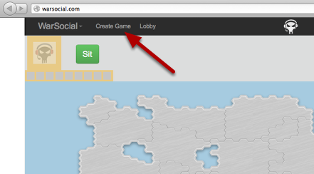
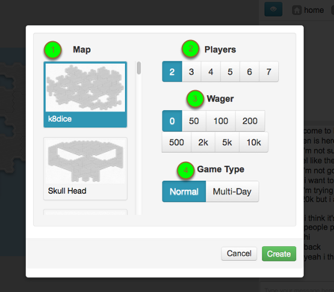

Created with a trial version of ScreenSteps
This tutorial will explain the ins and outs of creating games.
Opening "Create Game" wizard

Click the Create Game menu item found in the header.
Configuring the new game

- Choose the map you would like to play on.
- Choose the number of players you would like to play with.
- Choose the amount of points you would like to wager on the game.
- Choose the game type: Normal (LIVE) games or Multi-day games. Multi-day games have 24 hour turn lengths and allow for casual gameplay via email notifications.